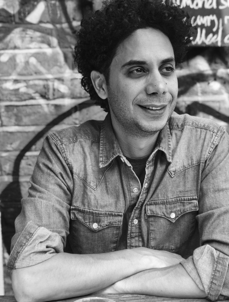

Explorer ∴ Educator ∴ Enthusiast
Short Biography
I am an assistant professor in the Aerospace Engineering Sciences department and Computer Science department at the University of Colorado Boulder. A long journey through different disciplines and worlds in the East and the West has taken me to this place.
I was born in the U.S., assembled in Iran, and experienced in the U.K. I received all of my primary education in Iran and became an engineer/scientist in the U.S. I received my B.S. in Bioengineering at the University of California, Berkeley, M.S. in Mechanical Engineering at Boston University, and Ph.D. in the field of systems and control theory with applications in robotics under the supervisions of Sean B. Andersson and Calin Belta at Boston University. I conducted my postdoctoral research in the field of robotics under the guidance of Lydia Kavraki and Moshe Vardi in the Dept. of Computer Science at Rice University. Then, I joined the Dept. of Computer Science at University of Oxford as a research scientist and worked with Marta Kwiatkowska on the "Mobile Autonomy: Safety, Trust, and Integrity" project.
Research Interests
I am interested in both the theoretical and application sides of my field of study. My interests include dynamics, control theory, game theory, systems, and formal methods with applications in robotics, particularly, motion planning, strategy synthesis, model checking, hybrid systems, and human-robot interaction.
The main theme of my work is safety and soundness, and the emphasis is on safe autonomy through correct-by-construction algorithmic approaches. In my research, I integrate control theory and formal methods to form powerful frameworks that enable autonomy in achieving complex tasks through high-level decision making with the awareness of low-level complexities and constraints of the physical systems.
My Ph.D. dissertation proposes a computationally tractable formal verification and synthesis method for stochastic systems with applications in robotics. My postdoctoral work revolves around temporal logic motion planning for complex dynamical systems under various types of uncertainty. Currently, I focus on developing algorithms that guarantee safety and integrity of mobile robots in their interactions with humans through cognitive models, stochastic games, and correct-by-construction embedded software components.
For more information, please see my research group website: www.ARIASystems.group
Latest News
Jan. 21, 2023 A paper has been accepted for presentation at ACM Int'l conference on Hybrid Systems: Control and Computation (HSCC) 2023.
Jan. 16, 2023 Three papers have been accepted for presentation at IEEE Int'l Conference on Robotics and automation (ICRA) 2023. Nov. 4, 2022 My MS student, Roland Ilyes, successfully defended his thesis. Congratulations Roland!. Sep. 15, 2022 Two papers have been accepted for presentation at Advances in Neural Information Processing Systems (NeurIPS) 2022. Jul. 15, 2022 Two papers have been accepted for presentation at IEEE Conference on Decision and Control (CDC) 2022. Jun. 30, 2022 A paper has been accepted for presentation at IEEE Int'l Conference on Intelligent Robots and Systems (IROS) 2022. May 15, 2022 A paper has been accepted for publication in IEEE Control Systems Letters (LCSYS) 2022. Feb. 25, 2022 A paper has been accepted for presentation at Int'l Conf. on Automated Planning and Scheduling (ICAPS) 2022. Jan. 31, 2022 A paper has been accepted for presentation at American Control Conf. (ACC) 2022. Jan. 31, 2022 Two papers have been accepted for presentation at IEEE Int'l Conference on Robotics and automation (ICRA) 2022. Sep. 17, 2021 A paper has been accepted for publication in IEEE Transactions on Automation Science and Engineering (T-ASE) 2021. Jul. 27, 2021 A paper has been accepted for presentation at IEEE Conference on Decision and Control (CDC) 2021. Jun. 30, 2021 A paper has been accepted for presentation at IEEE Int'l Conference on Intelligent Robots and Systems (IROS 2021). Feb. 28, 2021 Two papers have been accepted for presentation at IEEE Int'l Conference on Robotics and automation (ICRA 2021). Dec. 20, 2020 A paper has been accepted for presentation in Hybrid Systems: Computation and Control (HSCC 2021). Aug. 3, 2020 A paper has been accepted for presentation at the Int. Symp. on Games, Automata, Logics, and Formal Verification (GandALF) 2020. Jul. 15, 2020 A paper has been accepted for presentation at the IEEE Conference on Decision and Control (CDC) 2020. See paper here!. Jul. 12, 2020 ARIA Systems presented two papers at RSS 2020 workshops. Feb. 11, 2020 ARIA Systems Group's work on learning specifications has been featured on CEAS News. See article here!. Jan. 31, 2020 A paper has been accepted for publication in the IEEE journal of Transactions on Automatic Control (TAC 2020). Jan 20, 2020 A paper has been accepted for presentation in Int. Conf. on Autonomous Agents and Multiagent Systems (AAMAS 2020).